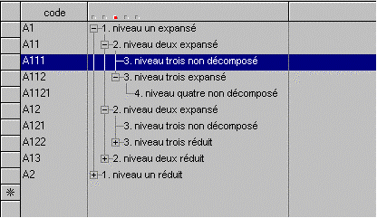

Les arbres sont des tableaux dont les éléments présentent une structure hiérarchisée arborescente (à la manière de l'explorateur ou des aides Windows). La plupart des attributs et des fonctionnalités "tableau" décrits au paragraphe précédent restent valables pour les arbres ; aussi, n'aborderons-nous ici que les spécificités de ces derniers, en commençant par quelques définitions :
Nous appellerons niveau la position d'un élément dans la hiérarchie : les éléments à la base de l'arbre sont au 1er niveau ; ils peuvent ensuite se décomposer en éléments de niveau 2, qui eux-mêmes peuvent se décomposer en éléments de niveau 3, et ainsi de suite.
Nous dirons que les éléments d'une même branche de niveaux N+1, N+2, etc. sont les sous-niveaux de l'élément racine de niveau N.
Le signe + en regard d'un élément signale l'existence d'un sous-niveau (non affiché à l'écran) pour cet élément. Nous nommerons expansion l'opération consistant à "ouvrir" l'élément pour afficher le sous-niveau.
Le signe - en regard d'un élément indique que celui-ci est déjà expansé à l'écran. La réduction consistera à "refermer" l'élément pour ne plus afficher ses sous-niveaux.
Nous nommerons enfin niveau de création le niveau à affecter à un élément nouvellement créé. Un curseur, placé dans l'en-tête de la colonne affichant l'arborescence, montre le niveau de création courant (voir schéma) ; cliquez sur le point correspondant au niveau souhaité pour changer le niveau de création.

Exemple d'arbre à 4 niveaux ; le point coloré dans l'en-tête de la 2ème colonne indique le niveau de création courant (3 ici).
Sur un arbre, vous pouvez (en supplément des fonctionnalités "tableau" et en standard - mais chaque application peut ou non proposer certains traitements standard) :
Expanser
un élément.
Cliquez sur le signe + (raccourci clavier : +).
Réduire
un élément.
Cliquez sur le signe - (raccourci clavier : -).
Modifier
le niveau de création.
Déplacez le curseur situé dans l'en-tête de la colonne affichant l'arborescence
(raccourcis clavier : Tab pour incrémenter le niveau, Back-Tab pour le
décrémenter).
Cliquer, à la manière d'un ascenseur, sur la flèche grisée horizontale gauche ou droite, présente le cas échéant dans l'en-tête de la colonne affichant l'arborescence, pour afficher les zones de cette colonne n'apparaissant pas à l'écran.
Notez aussi les particularités suivantes des arbres par rapport aux tableaux :
Création
d'un élément.
En cliquant sur la colonne d'état en regard de la première ligne vierge
(colonne affichant une étoile), vous demandez la création, en fin de liste,
d'un élément de 1er niveau.
Pour tout autre type de création, opérez de la manière suivante :
- Positionnez-vous à l'endroit désiré, sachant que l'insertion se fera
derrière la ligne courante.
- Choisissez le niveau de création, en déplaçant le curseur situé dans
l'en-tête de la colonne affichant l'arborescence, ou grâce aux touches
Tab (incrément du niveau) et Back-Tab (décrément du niveau).
- Tapez Inser.
Exemple :
1. A1
2.
A11
3.
A111
3.
A112
4.
A1121
2.
A12
3.
A121
3.
A122 (élément courant)
Avant de taper Inser (sur l'élément A122), choisissez le niveau de
création :
- 4, pour commencer la décomposition de l'élément A122 (= créer A1221).
- 3, pour poursuivre la décomposition de l'élément A12 (= créer A123).
- 2, pour reprendre la décomposition de l'élément A1 (= créer A13).
- 1, pour créer un nouvel élément au 1er
niveau (= créer A2).
Suppression
d'un élément.
Lorsque vous supprimez un élément d'arbre, ses
sous-niveaux sont automatiquement supprimés. Ainsi, dans l'exemple
précédent, supprimer l'élément A11 provoquera la suppression automatique
des éléments A111, A112 et A1121.
Et, si la sélection multiple est prévue par l'application :
Sélection
d'éléments.
Lorsque vous sélectionnez un élément d'arbre, ses
sous-niveaux sont automatiquement sélectionnés. Ainsi, dans l'exemple
précédent, la sélection de l'élément A11 provoquera la sélection automatique
des éléments A111, A112 et A1121.
De plus, il n'est pas possible
de sélectionner des éléments racine de niveaux différents. Ainsi, dans
l'exemple précédent, vous ne pouvez pas sélectionner simultanément les
éléments A112 (niveau 3) et A12 (niveau 2).
Enfin, les touches de sélection Shift+Page suivante et Shift+Page précédente
ne sont pas traitées.
Insertion
du contenu du presse-papiers.
Les éléments insérés depuis le presse-papiers conservent
leur niveau initial (le niveau de création n'est pas pris en compte
ici). Autrement dit, vous ne pouvez pas copier ou couper des lignes puis
les réinsérer à un niveau différent. Dans l'exemple précédent, supposons
que vous ayez sélectionné et copié l'élément A11 dans le presse-papiers
; si vous le réinsérez par la suite, il conservera son niveau 2 ; vous
pourrez donc par exemple le réinsérer avant l'élément A11 ou A12 mais
pas avant l'élément A122.
Voir aussi : Tableaux récapitulatifs de l'utilisation de la souris et du clavier.